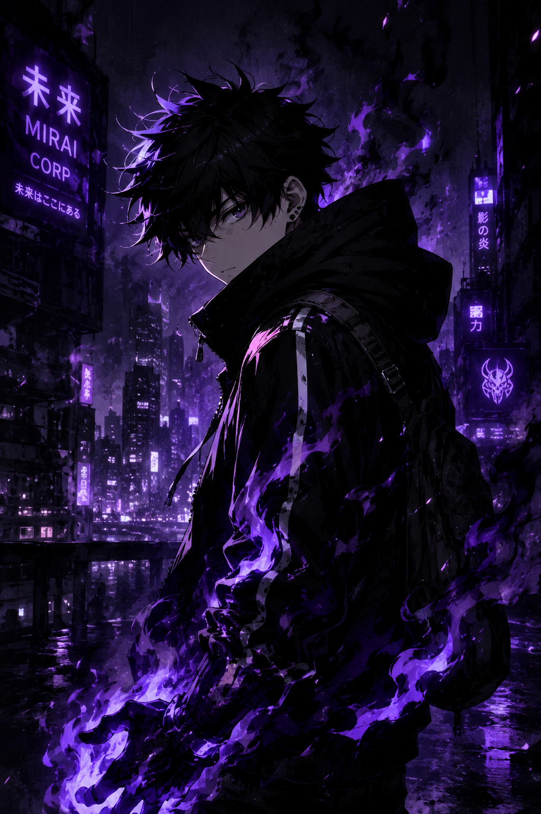
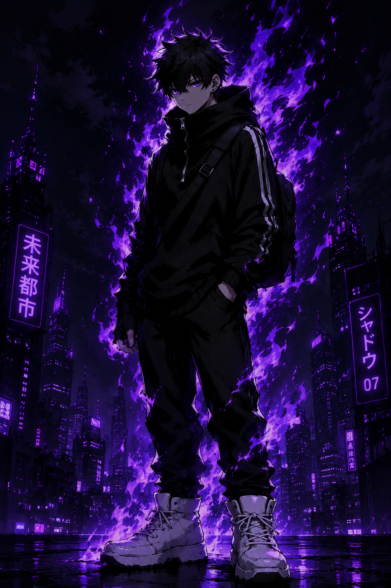

System: Online // City: Night
Bem-vindo aos arquivos não autorizados de Broken Street. Se você chegou até aqui, já sabe que SynthCity não é o que parece.
[LOG #077]: Distúrbios energéticos detectados nas zonas industriais. Origem desconhecida. Investigação encerrada antes da conclusão.
Documentação visual e evidências associadas a Philip Stills.


Perfil de Aiden Stewart. Imagens e evidências estão sendo organizadas.